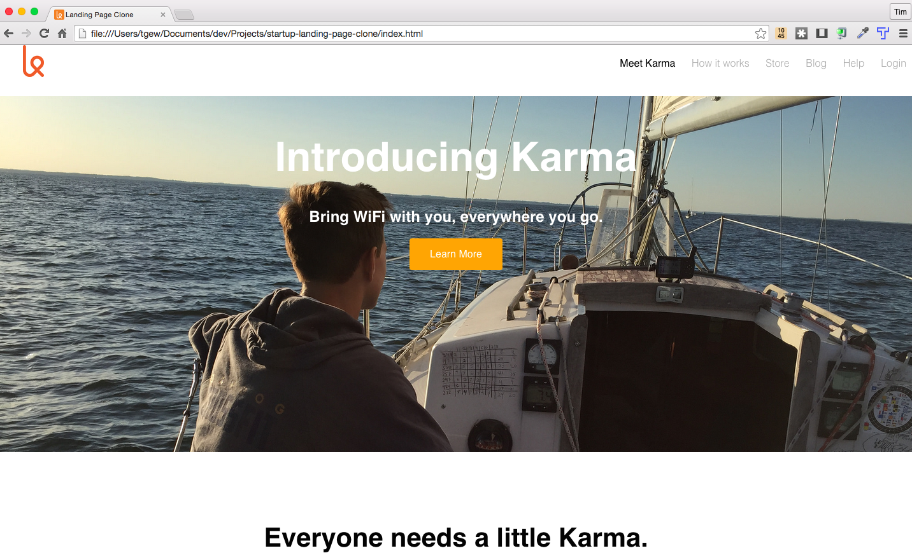

Projects
The goal of this project was to "customize" the NY Times home page by changing the HTML and CSS via Chrome Dev. Tools.

Karma's site design and layout are great. The goal was to start from scratch and see how close I could get to the original. I was pretty happy with the results. I used my own background image, though.
